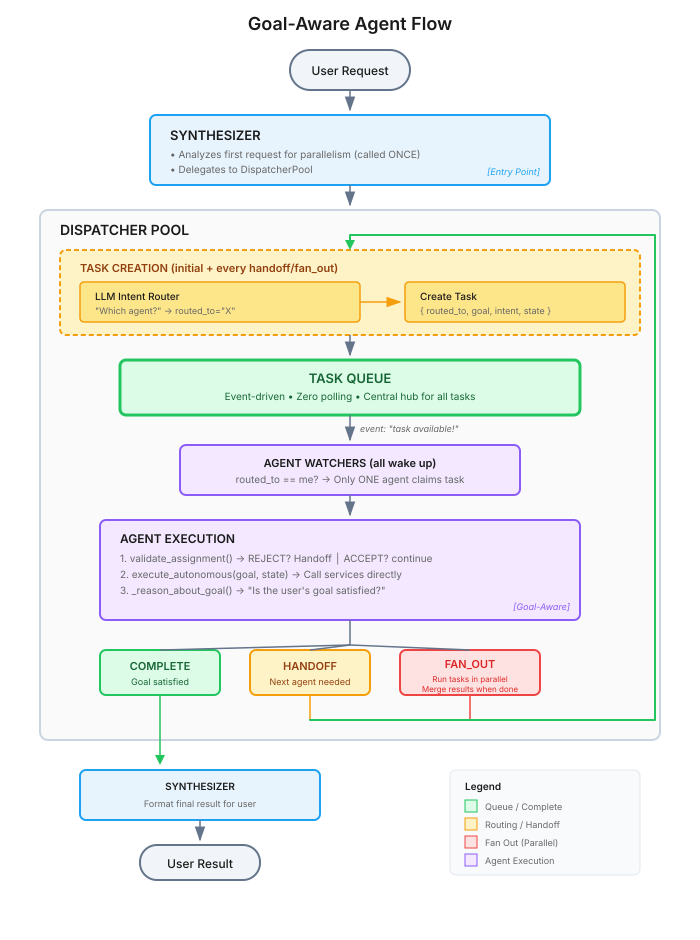
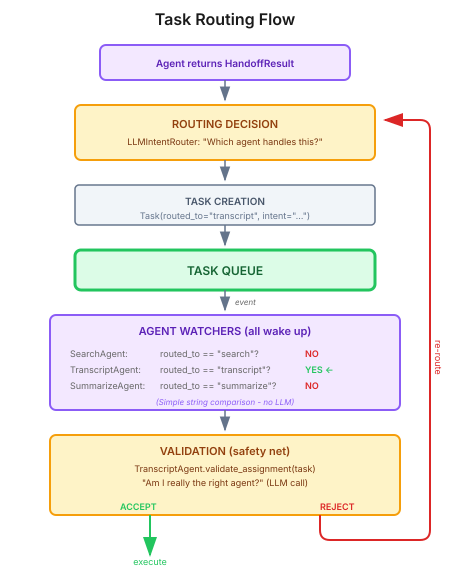
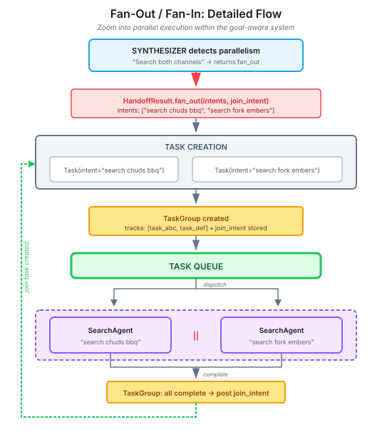

From Orchestrator to Goal-Aware: What Happens When Every Agent Thinks
Exploring distributed coordination where agents reason about goals and route themselves
What happens when you remove the central orchestrator and let every agent reason about the user’s goal.
Agents
Architecture
Domain-Driven Design
Published
January 18, 2026
---
title: "From Orchestrator to Goal-Aware: What Happens When Every Agent Thinks"
subtitle: "Exploring distributed coordination where agents reason about goals and route themselves"
date: "2026-01-18"
categories: [Agents, Architecture, "Domain-Driven Design"]
reading-time: 25
description: "What happens when you remove the central orchestrator and let every agent reason about the user's goal."
---
::: {.source-button}
:::
In [Part 1](../multi-agent-part1/), we discussed a YouTube research assistant with an orchestrator coordinating four specialized agents. The orchestrator received user requests, delegated to specialists, collected results, and synthesized responses. It worked - and for many use cases, it's the right pattern.
But I noticed something: most of the multi-agent examples I encountered followed this same orchestrator pattern. A central coordinator, specialized workers, hub-and-spoke communication. It works, but is it the only way?
```
Orchestrator Pattern:
User → Orchestrator → Agent A → Orchestrator → Agent B → Orchestrator → User
```
I wanted to explore a different paradigm - what happens when you remove the central coordinator entirely? What if agents could coordinate directly, without a central hub? What if each agent understood the overall goal and could decide for itself what should happen next?
This led to exploring goal-aware agent patterns—where coordination emerges from agents reasoning about goals rather than being dictated by a central hub.
```
Goal-Aware Pattern (emergent coordination):
User → Agent A → Agent B → Agent C → User
```
This isn't necessarily *better* than orchestration - it's a different set of tradeoffs. But it's worth understanding, because it opens up patterns that are harder to achieve with central coordination: natural parallelism, adaptive workflows, and agents that respond to what they find rather than following a predetermined script.
## In this article, we shall cover:
- Agents that reason about goals and signal what work remains
- Implementing the dispatcher pattern with agent confirmation
- Parallel execution patterns with decentralized fan-out/fan-in
- How to choose between orchestration and goal-aware patterns
---
## Recap: The Orchestrator Pattern
Before exploring alternatives, let's be precise about what the orchestrator pattern actually does and where its limitations lie.
Recall from [Part 1](../multi-agent-part1/), we were considering a multi-step research task: "Find videos about Kamado cooking, get their transcripts, summarize the key temperatures and times, and save to a markdown file."
With an orchestrator, the logs show a hub-and-spoke pattern—every interaction flows through the centre:
```
10:42:15 [INFO] orchestrator: Received request: Find videos about Kamado cooking...
10:42:17 [INFO] orchestrator: Delegating to SearchAgent
10:42:18 [INFO] search_agent: Found 5 videos
10:42:18 [INFO] orchestrator: SearchAgent returned results
10:42:19 [INFO] orchestrator: Delegating to TranscriptAgent
10:42:22 [INFO] transcript_agent: Fetched 3 transcripts
10:42:22 [INFO] orchestrator: TranscriptAgent returned results
10:42:23 [INFO] orchestrator: Delegating to SummarizeAgent
10:42:26 [INFO] summarize_agent: Generated summary
10:42:26 [INFO] orchestrator: SummarizeAgent returned results
10:42:27 [INFO] orchestrator: Delegating to WriterAgent
10:42:27 [INFO] writer_agent: Saved to kamado_notes.md
10:42:27 [INFO] orchestrator: Request completed
```
Notice how every result returns to the orchestrator before the next step begins. The orchestrator accumulates context from each agent, maintaining full visibility of the workflow.
This works well for interactive, conversational applications where that accumulated context enables natural follow-up questions.
But the pattern has characteristics worth noting:
- **The coordinator sees everything**: Context accumulates at the center
- **Sequential by default**: Parallelism requires explicit orchestrator logic
- **Central coupling**: Adding new agents means updating the orchestrator
### The Hidden Costs
**Context accumulation.** Every sub-agent's response flows back to the orchestrator before the next step. For a 4-step workflow, the orchestrator's context window contains the full history of all previous steps. This means:
- Token costs grow with chain length (you pay for all previous results in every subsequent call)
- Long contexts can degrade response quality as the model has more to attend to
- You eventually hit context window limits on complex workflows
**LLM call multiplication.** When the orchestrator delegates to a sub-agent like SearchAgent, that agent is itself a ChatAgent with tools. Each tool call in an agentic loop requires an LLM round-trip. When testing the reference implementation, a "search → transcript → summarize → write" workflow usually generated around **17-34 LLM calls** with significant variance between runs—and as we showed in Part 1, setting temperature to zero and specifying a seed doesn't eliminate this variance.
Why such variance? The orchestrator LLM makes different tactical decisions each time:
- **Search strategy**: One run might do a single combined search; another might run 3 parallel targeted searches
- **Step skipping**: Some runs skip summarization entirely, sending transcripts directly to the writer
- **Delegation phrasing**: How the orchestrator words its request to sub-agents affects their behaviour—one phrasing might cause a sub-agent to fail while another succeeds
This variance isn't a bug—it's the inherent nature of letting an LLM decide the workflow at runtime.
These aren't reasons to avoid orchestration - for conversational interfaces, context accumulation is a feature, not a bug. But they're worth understanding as you choose patterns.
I explored several alternative patterns:
- **Agent self-selection**: Agents monitor a shared queue and bid to claim tasks. But what if multiple agents bid? What if none do? What if the LLM consistently makes the wrong decision? This requires tie-breaking, fallback logic, and N LLM calls per task (one per agent).
- **Capability-based routing**: Match tasks to agents by declared capabilities. Elegant for simple cases, but breaks down when an intent requires multiple steps: "Get transcripts AND summarize" - which agent goes first?
- **Explicit planning**: An LLM generates a DAG of steps upfront. Predictable, but inflexible - can't adapt based on what you find.
Each had merits, but they also had complexity. Eventually, a simpler insight emerged: **what if every agent understood the goal and could reason about what's left to do?**
---
## The Goal-Aware Pattern: Distributed Intelligence
In the orchestrator model, we had one "smart" coordinator directing "dumb" workers. The orchestrator knew the goal; agents just executed commands.
What if we flipped this? What if every agent was "smart"?
In the goal-aware model, every agent receives two things:
1. **The original goal** - what the user actually asked for
2. **Accumulated state** - results from previous agents
Each agent then reasons: "Given this goal and what we have so far, can I complete the request? Or should someone else continue?"
In the goal-aware pattern, agents reason about what the user is trying to achieve, and decide whether to complete or hand off:
```python
class SearchAgent(BaseAgent):
@property
def name(self) -> str:
return "search"
@property
def capabilities(self) -> list[str]:
return ["youtube_search", "video_discovery"]
async def execute_autonomous(
self,
goal: str,
state: dict,
) -> HandoffResult:
# Do the search
results = await search_youtube(query)
# LLM reasons: is the goal satisfied?
reasoning = await self._reason_about_goal(goal, results)
if reasoning["satisfied"]:
return HandoffResult.complete(results)
else:
return HandoffResult.handoff(
intent=reasoning["next_step"], # LLM determines this
state={**state, "videos": results}
)
```
The agent doesn't just execute and return. The agent still calls the same `search_youtube` service, but now it also understands the user's intent and reasons about what should happen next; deciding whether to complete or hand off to another agent.
This is philosophically different from most agent frameworks. The agent isn't just following commands—it's reasoning about goals and making decisions about the appropriate next step.
### What Changes in the Architecture
The domain layer stays the same - YouTube search, transcript fetching, summarization. Those services don't change. What changes is the coordination layer.
Here's the new structure:
```
src/youtube_goal_agents/
├── cli/ # Entry points (same as before)
│ ├── commands.py
│ └── main.py
├── agents/ # Goal-aware agents
│ ├── base.py # BaseAgent with execute_autonomous() and validate_assignment()
│ ├── search.py
│ ├── transcript.py
│ ├── summarize.py
│ ├── synthesizer.py # Analyzes requests for parallelism opportunities
│ └── writer.py
├── infra/ # Coordination infrastructure
│ ├── pool.py # DispatcherPool - routes tasks, handles rejections
│ ├── registry.py # Agent discovery
│ ├── task_queue.py # Event-driven queue
│ ├── intent_router.py # LLM-based routing with exclusion support
│ ├── loop_detector.py # Detects and prevents infinite handoff cycles
│ └── session.py # State management and variable resolution
└── models/
├── task.py # Task, TaskResult
└── handoff.py # HandoffResult, ValidationResult types
```
The key differences from the orchestrator pattern:
- **Goal-aware agents**: Each agent understands the user's goal and reasons about satisfaction
- **Dispatcher with confirmation**: LLM router assigns tasks, agents can validate and reject
- **Structured handoffs**: Explicit `HandoffResult` and `ValidationResult` types
- **Event-driven coordination**: Zero polling overhead, efficient task distribution
All the actual work - stays in the same services; in the reference architecture, these are directly reused from the orchestrator pattern. The goal-aware pattern is a coordination layer, not a rewrite of business logic.
Here is an overview of what this pattern looks like at a high level, before we dive into the individual components:

### The Complexity Trade-Off
In the orchestrator pattern, complexity is **centralized**. The orchestrator makes all the decisions; individual agents are simple workers:
```python
# Orchestrator SearchAgent
SEARCH_AGENT_INSTRUCTIONS = """You are a YouTube Search Agent.
Your job is to find relevant YouTube videos based on user queries.
...
You only search - you do not fetch transcripts or summarize."""
def create_search_agent() -> ChatAgent:
"""Create a Search Agent instance."""
client = get_chat_client()
return ChatAgent(
chat_client=client,
name="SearchAgent",
instructions=SEARCH_AGENT_INSTRUCTIONS,
tools=[search_youtube_formatted],
)
```
In the goal-aware pattern, complexity is **distributed**. Each agent carries the machinery to reason about goals and make handoff decisions:
```python
# Goal-aware SearchAgent
SEARCH_INSTRUCTIONS = """..."""
GOAL_REASONING_PROMPT = """..."""
QUERY_EXTRACTION_PROMPT = """..."""
class SearchAgent(BaseAgent):
@property
def name(self) -> str: ...
@property
def capabilities(self) -> list[str]: ...
@property
def description(self) -> str: ...
async def execute_autonomous(self, goal: str, state: dict) -> HandoffResult:
"""Goal-aware execution with handoff decisions."""
# Extract query from goal (LLM call)
# Execute search
# Reason about goal satisfaction (LLM call)
# Decide: complete or handoff
# Handle parallel task merging
...
async def _reason_about_goal(self, goal: str, results: dict) -> dict:
"""LLM-based reasoning about whether goal is satisfied."""
...
async def _extract_query_from_goal(self, goal: str) -> str:
"""Parse intent into actionable query."""
...
def _interleave_parallel_results(self, result_lists: list):
"""Merge results from parallel execution."""
...
```
Each goal-aware agent now handles:
1. **Goal satisfaction reasoning** - "Is the user's goal met, or should someone continue?"
2. **Completion vs handoff decisions** - with explicit `HandoffResult` types
3. **Parallel task merging** - interleaving results from fan-out operations
4. **Intent extraction** - parsing complex requests into actions
This is the price of distributed intelligence. The orchestrator pattern centralizes decision-making; the goal-aware pattern distributes it across agents.
**Is it worth it?** That depends on your use case. For simple, predictable workflows, the orchestrator pattern's centralized control is easier to reason about. For adaptive workflows with parallelism opportunities, the goal-aware pattern's per-agent reasoning enables capabilities that are harder to achieve with central coordination.
For example:
- **No context bottleneck**: State flows forward through the chain, not back to a central point. Each agent only sees what's relevant.
- **Adaptive workflows**: Agents respond to what they find. If search returns no results, the SearchAgent can hand off with "Try a different query" rather than blindly continuing.
- **Easy extensibility**: Adding a new agent doesn't require updating a central orchestrator. If the new agent can handle certain intents, it will be routed tasks naturally.
---
## Structured Completion Signalling
One of the first complexities I encountered during experimentation was that agents needed a clear way to signal their intent: "I'm done" vs "Someone else should continue" vs "Multiple things can happen in parallel."
I solved this with explicit result types:
```python
@dataclass
class HandoffResult:
"""Result from an agent - complete, handoff, or fan_out."""
action: Literal["complete", "handoff", "fan_out"]
# If action == "complete"
result: Any | None = None
# If action == "handoff"
intent: str | None = None
# If action == "fan_out"
intents: list[str] | None = None
join_intent: str | None = None
# Shared state for handoff and fan_out
state: dict[str, Any] = field(default_factory=dict)
```
Three possible outcomes, no ambiguity:
```python
# I'm done - here's the answer
return HandoffResult.complete({"summary": "Key temperatures: 225°F for 4 hours..."})
# Someone else needs to continue
return HandoffResult.handoff(
intent="Summarize these transcripts focusing on cooking times",
state={**state, "transcripts": my_transcripts}
)
# Multiple things can happen in parallel, then merge
return HandoffResult.fan_out(
intents=["Search channel A", "Search channel B"],
join_intent="Combine results and get transcripts",
state={"query": "pork loin"}
)
```
The type system enforces validity. Return "complete" without a result? Construction fails. Return "fan_out" with only one intent? Validation catches it.
This eliminates an entire class of coordination bugs. No string parsing, no conventions, no ambiguity.
### How This Differs from Framework Handoffs
If you're familiar with [Microsoft's Agent Framework](https://learn.microsoft.com/en-us/agent-framework/user-guide/workflows/orchestrations/handoff), you might notice similarities with the built-in handoff pattern - agents transfer control to each other without a central orchestrator. But the patterns differ in meaningful ways:
**Microsoft's Handoff Pattern:**
- Handoff paths are **declared upfront** (`.add_handoff(triage, [technical, billing])`)
- Agents trigger handoffs via **explicit tool calls** (`handoff_to_billing_agent()`)
- Agents route based on the **current message** ("Is this a billing question?")
- Full conversation history is passed to the receiving agent
**Our Goal-Aware Pattern:**
- Routing happens **dynamically at runtime** via LLM-based intent analysis
- Agents return **structured results** (`HandoffResult.handoff(intent=...)`) rather than calling tools
- Every agent reasons about the **original user goal** ("Is the goal satisfied?")
- Accumulated state (not full history) flows forward through the chain
The key philosophical difference: Microsoft's handoff is a **smart router** - it decides *who* should handle something. Our pattern adds *why* - each agent understands the end goal and can reason about whether continuing the chain is necessary.
This matters for adaptive workflows. When SearchAgent finds no relevant videos, it doesn't blindly hand off to TranscriptAgent. It reasons: "The goal was to summarize cooking techniques, but I found nothing useful. I should hand off with 'Try alternative search terms' rather than 'Fetch transcripts for these videos'."
Both patterns avoid central orchestration. The choice depends on whether you need declarative routing (predictable, auditable paths) or emergent routing (adaptive, goal-aware decisions).
---
## Dispatcher Pattern: Centralized Routing with Agent Confirmation
Now that agents can reason about goals and signal when more work is needed, we need a way to route those follow-up tasks to the right agents. What's the best way to assign tasks in a multi-agent system where any agent can request further work?
### Why Not True Self-Selection?
True self-selection would have agents "bid" for tasks:
```python
# True self-selection:
# 1. Task arrives
# 2. All agents evaluate: "Can I handle this? How confident am I?"
# 3. Agents submit bids with confidence scores
# 4. Highest bidder wins
```
This sounds elegant but introduces complexity:
- **Multiple LLM calls per task**: Every agent reasons about every task
- **Tie-breaking**: What if two agents bid equally?
- **Latency**: Must wait for all bids before proceeding
- **Wasted computation**: Most bids are losers
Instead, we use a **dispatcher pattern** with a twist: agents can confirm or reject their assignment.
### The Dispatcher Pattern
A central LLM-based router makes the initial decision, but the assigned agent validates before executing. This gives us:
- **Efficient routing**: Single LLM call decides initial assignment
- **Error correction**: Agents can reject mis-routed tasks
- **Clear accountability**: Each rejection includes a reason
Here's the complete flow when an agent signals "more work needed":
<!-- ```
┌──────────────────────────────────────────────────────┐
│ ROUTING DECISION │
│ │
Agent returns │ ┌─────────────────┐ │
HandoffResult ────┼───►│ LLMIntentRouter │ "Which agent handles this?" │
│ └────────┬────────┘ │
│ │ │
│ ▼ │
│ Task created with routed_to="transcript" │
└──────────────────────────┬───────────────────────────┘
│
▼
┌──────────────────────────────────────────────────────┐
│ QUEUE │
│ │
│ Task { routed_to: "transcript", intent: "..." } │
│ │
└──────────────────────────┬───────────────────────────┘
│
Queue signals: "task available!"
│
┌──────────────────────────┼───────────────────────────┐
│ AGENT WATCHERS (all wake up) │
│ │ │
│ SearchAgent: routed_to == "search"? NO │
│ TranscriptAgent: routed_to == "transcript"? YES ◄─┘
│ SummarizeAgent: routed_to == "summarize"? NO │
│ │
│ (Simple string comparison - no LLM calls) │
└──────────────────────────┬───────────────────────────┘
│
▼
┌──────────────────────────────────────────────────────┐
│ VALIDATION (safety net) │
│ │
│ TranscriptAgent.validate_assignment(task) │
│ "Am I really the right agent?" (LLM call) │
│ │
│ ACCEPT ──► execute_autonomous() │
│ REJECT ──► re-route (excluding me) │
└──────────────────────────────────────────────────────┘
``` -->

**Key insight: This is directed routing, not competitive claiming.** The LLM makes the routing decision *before* the task enters the queue, setting the `routed_to` field. When agents wake up, they simply check if `routed_to == self.name`—a fast string comparison with no ambiguity about who should claim the task. Only the designated agent will return `True` from `can_handle()`.
Let's walk through each step:
1. **Agent returns handoff**: `HandoffResult.handoff(intent="Get transcripts and summarize...")`
2. **Pool calls LLM router** (before task submission):
```python
# In pool._handle_handoff():
target_agent = await self._intent_router.find_agent_for_intent(intent, registry)
routed_to = target_agent.name if target_agent else None
```
3. **Pool creates task with `routed_to` pre-set**:
```python
handoff_task = Task(
description=intent,
context={"routed_to": routed_to, "intent": intent, ...}
)
```
4. **Target agent claims task** - routing is already decided:
```python
def can_handle(self, task: Task) -> bool:
# Priority 1: Check if LLM pre-routed this task to us
routed_to = task.context.get("routed_to")
if routed_to is not None:
return routed_to == self.name # Only the designated agent claims
# Priority 2: Capability-based matching (fallback for direct task submission
# or when LLM routing is unavailable)
if task.required_capabilities:
return any(cap in self.capabilities
for cap in task.required_capabilities)
return False
```
Note that capability matching only activates when `routed_to` is not set—for example, when a task is submitted directly without going through the intent router, or as a fallback if routing fails.
5. **Agent validates before executing** - can reject with reason:
```python
# In pool._execute_task():
validation = await agent.validate_assignment(task)
if not validation.accepted:
# Re-route to another agent with exclusion list
await self._handle_rejection(agent, task, validation)
return
# Proceed with execution
result = await agent.execute_autonomous(...)
```
The key insight: **LLM routing happens once per handoff**, but the assigned agent gets a chance to validate. If it rejects, the task is re-routed with the rejecting agent excluded. This catches dispatcher mistakes without requiring all agents to evaluate every task.
### Agent Confirmation in Practice
Here's what rejection looks like in the logs:
```
[15:42:26] Agent 'search' claimed task 4c8f97e3
[15:42:29] Agent 'search' rejected task 4c8f97e3:
THE TASK REQUIRES FETCHING TRANSCRIPTS AND SUMMARIZING TECHNIQUES,
BUT MY ROLE IS LIMITED TO FINDING RELEVANT YOUTUBE VIDEOS
WITHOUT RETRIEVING TRANSCRIPTS OR SUMMARIZING CONTENT.
[15:42:29] Re-routing task 4c8f97e3 from 'search' to 'transcript'
```
The search agent was initially assigned a task that required transcript fetching. It validated the assignment using LLM reasoning, rejected with an explanation, and the pool re-routed to the transcript agent—excluding the search agent from future consideration for this task.
### The Validation Method
Each agent validates assignments using LLM reasoning:
```python
async def validate_assignment(self, task: Task) -> ValidationResult:
"""Validate whether this agent should handle the assigned task."""
intent = task.context.get("intent", task.description)
prompt = f"""You are the "{self.name}" agent in a multi-agent system.
YOUR ROLE: {self.description}
YOUR CAPABILITIES: {', '.join(self.capabilities)}
You have tools that allow you to perform these capabilities. You are NOT limited
by what an LLM can do - you have actual tools and APIs available.
A task has been routed to you:
INTENT: "{intent}"
Should you handle this task?
- Answer YES if ANY part of the task involves your capabilities
- Answer YES even if the task ALSO mentions other steps (like summarizing or
writing) - you'll do YOUR part and hand off the rest
- Answer NO only if NONE of your capabilities are needed at all
IMPORTANT: Multi-step tasks are normal. If the task says "fetch transcripts,
then summarize" and you're the transcript agent, answer YES - you'll fetch
transcripts and hand off summarization to another agent.
Respond in this exact format:
DECISION: YES or NO
REASON: Brief explanation (1 sentence)"""
response = await self._client.get_response(prompt)
response_text = response.text.strip().upper()
if "DECISION: YES" in response_text or response_text.startswith("YES"):
return ValidationResult.accept()
else:
reason = f"{self.name} rejected: task doesn't match my role"
if "REASON:" in response_text:
reason = response_text.split("REASON:")[-1].strip()
return ValidationResult.reject(reason)
```
When an agent rejects, the pool re-routes with the rejecting agent excluded from consideration. Rejections are tracked to prevent loops—after 3 failed routing attempts, the task fails with context about what went wrong.
### Why This Approach?
| Aspect | True Self-Selection | Dispatcher + Confirmation |
|--------|---------------------|---------------------------|
| **LLM calls per task** | N (all agents bid) | 1-3 (route, maybe re-route) |
| **Latency** | High (wait for all bids) | Low (single decision) |
| **Error recovery** | Complex (re-bid?) | Simple (re-route with context) |
| **Accountability** | Unclear (who decided?) | Clear (dispatcher + agent reasons) |
The dispatcher pattern trades theoretical elegance for practical efficiency. We still get agent autonomy through the confirmation step, but avoid the complexity of a full bidding system. The pool uses `asyncio.Event` for coordination—agents sleep until work arrives, giving us zero polling overhead.
---
## Parallel Execution: Decentralized Fan-Out/Fan-In
Some tasks are naturally parallel. "Search both Chuds BBQ AND Fork & Embers for pork loin recipes" has two independent searches that can run simultaneously.
### The Pattern
Any agent can trigger parallel execution by returning a fan-out:
```python
return HandoffResult.fan_out(
intents=[
"Search Chuds BBQ for pork loin",
"Search Fork and Embers for pork loin"
],
join_intent="Combine search results and get transcripts",
state={"query": "pork loin kamado"}
)
```
The pool handles the coordination:
<!-- ```
User: "Search both channels for pork loin recipes"
│
┌─────────▼─────────┐
│ Synthesizer │ Analyzes: "Two channels = parallel"
└─────────┬─────────┘
│
┌──────────────┴──────────────┐
▼ ▼
[SearchAgent] [SearchAgent]
"chuds bbq" "fork + embers"
│ │
└──────────────┬──────────────┘
▼
[TaskGroup collects]
│
▼
[Join task posted]
│
▼
[Continue chain...]
``` -->

**The Synthesizer's role**: The Synthesizer is a specialized agent that analyses incoming requests for parallelism opportunities. When it sees "search both X AND Y" or "compare channels A and B", it recognizes these as independent operations and returns a `fan_out` result. For requests without parallelism opportunities (like "search for cooking videos"), it simply hands off to the appropriate agent. This analysis happens once at the start of the workflow—the Synthesizer doesn't participate in later stages.
### TaskGroup: Tracking Parallel Completion
We track parallel tasks with a simple data structure:
```python
@dataclass
class TaskGroup:
"""Tracks a group of parallel tasks for fan-out/fan-in."""
id: str
task_ids: list[str]
join_intent: str
state: dict[str, Any]
results: dict[str, Any] = field(default_factory=dict)
errors: list[str] = field(default_factory=list)
@property
def is_complete(self) -> bool:
return len(self.results) + len(self.errors) >= len(self.task_ids)
```
When all parallel tasks complete, the pool automatically posts the join task:
```python
async def _check_group_completion(self, task: Task) -> None:
"""Check if a completed task's group is now complete."""
group = self._get_group_for_task(task.id)
if not group:
return
# Record result
if task.result.success:
group.results[task.id] = task.result.data
else:
group.errors.append(f"Task {task.id}: {task.result.error}")
# All done?
if group.is_complete:
await self._post_join_task(group)
```
### Key Design Decisions
**Parallel tasks always complete**: When `is_parallel_task` is True in the state, agents complete with their results rather than handing off. This ensures results are captured before the join.
The `DispatcherPool` sets this flag when creating fan-out tasks:
```python
# In pool._post_fan_out_tasks():
for intent in result.intents:
task = Task(
description=intent,
context={
"routed_to": routed_to,
"goal": original_goal,
"state": {
**result.state,
"is_parallel_task": True, # Signal: complete, don't chain
},
"group_id": group.id,
}
)
```
Agents check this flag and short-circuit their handoff logic:
```python
# In execute_autonomous:
if state.get("is_parallel_task"):
# Don't hand off - complete so results are captured for the join
return HandoffResult.complete(my_results)
```
Without this flag, parallel SearchAgents might each hand off to TranscriptAgent, creating a cascading mess instead of a clean fan-in.
**Interleaving for diversity**: When combining results from parallel searches, we interleave rather than concatenate:
```python
def _interleave_videos(self, video_lists: list[list[dict]]) -> list[dict]:
"""Interleave [A1, B1, A2, B2...] instead of [A1, A2..., B1, B2...]"""
interleaved = []
max_len = max(len(vl) for vl in video_lists)
for i in range(max_len):
for video_list in video_lists:
if i < len(video_list):
interleaved.append(video_list[i])
return interleaved
```
This ensures variety when selecting top N results. If we just concatenated, we might get all results from one search before any from another.
### Handling Partial Failures in Parallel Execution
One of the advantages of the goal-aware pattern is that agents can reason about failures as part of their decision-making. This becomes especially valuable in fan-out scenarios where some parallel tasks might succeed while others fail.
To enable this, we define an explicit failure type:
```python
@dataclass
class PartialResult:
"""Result when execution cannot complete fully."""
error: str
partial_data: dict[str, Any]
completed_steps: list[str]
```
When checking group completion, the pool handles mixed success/failure gracefully:
```python
async def _check_group_completion(self, group: TaskGroup) -> None:
"""Handle completion of a parallel task group."""
if not group.is_complete:
return
# Some tasks succeeded, some failed
if group.errors and group.results:
# Create a partial result - we have some data to work with
partial = PartialResult(
error=f"{len(group.errors)} of {len(group.task_ids)} searches failed",
partial_data={"successful_results": group.results},
completed_steps=[f"search_{tid}" for tid in group.results.keys()]
)
# Post join task with partial data - let downstream agents decide
await self._post_join_task(
group,
state={**group.state, "partial_result": partial.to_dict()}
)
elif group.errors:
# All failed - surface the error
await self._complete_with_error(group, group.errors)
else:
# All succeeded - normal flow
await self._post_join_task(group)
```
The downstream agent (e.g., TranscriptAgent) can then reason about the partial result:
```python
if "partial_result" in state:
partial = state["partial_result"]
logger.warning(f"Working with partial data: {partial['error']}")
# Continue with what we have rather than failing entirely
videos = partial["partial_data"]["successful_results"]
```
This pattern prevents a single failure from derailing an entire workflow. If one of three parallel searches times out, we still get results from the other two.
---
## Goal-Aware Reasoning in Practice
Let's look at how SearchAgent actually reasons about whether to complete or hand off:
```python
async def _reason_about_goal(
self, goal: str, search_results: dict
) -> dict:
"""Use LLM to reason about goal satisfaction."""
video_titles = [r["title"] for r in search_results.get("results", [])[:3]]
prompt = f"""You are helping decide if a user's goal is satisfied.
USER'S GOAL: "{goal}"
WHAT I DID: Searched YouTube and found these videos:
{chr(10).join(f'- {title}' for title in video_titles)}
QUESTION: Is the goal satisfied, or do they need more?
Consider:
- If they just want to find/discover videos → goal is SATISFIED
- If they want specific information FROM the videos → need TRANSCRIPTS
- If they want analysis, summaries, or key points → need TRANSCRIPTS then SUMMARIZATION
Respond in this exact format:
SATISFIED: yes or no
NEXT_STEP: (only if not satisfied) describe what needs to happen next"""
response = await client.get_response(prompt)
# Parse response...
return {"satisfied": satisfied, "next_step": next_step}
```
The agent doesn't blindly execute a command. It understands:
- "Find videos about cooking" → satisfied with search results
- "Tell me the cooking temperatures from these videos" → need transcripts
- "Summarize the key points" → need transcripts, then summarization
### Graceful Degradation
If goal reasoning times out (LLM latency spikes happen), we default to handing off:
```python
try:
reasoning = await self._reason_about_goal(goal, results)
except TimeoutError:
# Safer to do more work than less
reasoning = {
"satisfied": False,
"next_step": "Get transcripts for detailed information"
}
```
Better to fetch transcripts unnecessarily than to miss information the user wanted.
This goal-aware reasoning is powerful, but it also means execution paths emerge at runtime rather than being predetermined. When an agent makes a surprising decision—completing too early, handing off unexpectedly, or entering a loop—how do you understand what happened?
---
## Debugging Goal-Aware Chains
**The Challenge**: When execution paths aren't predetermined, debugging requires different strategies than traditional orchestration.
### Built-in Observability
**1. Execution Path Logging**
The system tracks exactly which agents ran and how they completed:
```bash
[Path] search(handoff) → transcript(handoff) → summarize(complete)
```
This shows the full chain, making it easy to spot unexpected routing or missing steps.
**2. State Inspection**
Each handoff includes accumulated state. You can see what data flowed through the chain:
```python
# After search completes
state = {"search_results": [...], "query": "pork loin"}
# After transcript completes
state = {"search_results": [...], "transcripts": [...], "query": "pork loin"}
```
**3. Loop Detection**
The system catches infinite handoff cycles and fails fast with context:
```python
# Execution path: search → transcript → search (loop!)
if current_agent in recent_path:
return PartialResult(error=f"Loop detected: {' → '.join(path)}")
```
When debugging, focus on agent descriptions (for routing issues), goal reasoning prompts (for early completion), and capability overlaps (for loops).
### Debug Mode Example
```bash
# Verbose mode shows all agent decisions
uv run youtube-goal-aware -v chat -r "Find pork loin recipes and summarize"
# Output shows reasoning at each step:
[SearchAgent] Executing: "Find pork loin recipes"
[SearchAgent] Goal reasoning: "User needs information FROM videos, not just titles"
[SearchAgent] Decision: Handing off to get transcripts
[SearchAgent] Handing off: "Get transcripts for these videos"
[TranscriptAgent] Executing: "Get transcripts for these videos"
[TranscriptAgent] Goal reasoning: "User wants summary, not satisfied with raw transcripts"
[TranscriptAgent] Decision: Handing off to summarize
[TranscriptAgent] Handing off: "Summarize cooking temps and times"
[SummarizeAgent] Executing: "Summarize cooking temps and times"
[SummarizeAgent] Goal reasoning: "Summary complete, goal satisfied"
[SummarizeAgent] Decision: Completing with summary
```
The key is that each agent's reasoning is visible, making it clear why decisions were made.
---
## Choosing Your Pattern
We now have two patterns: the orchestrator from Part 1, and the goal-aware pattern from this post. When should you use each?
### Pattern Selection Guide
| Scenario | Best Pattern | Why |
|----------|--------------|-----|
| ChatGPT-style conversational interface | **Orchestrator (V1)** | Back-and-forth dialogue, context accumulation needed |
| Batch research pipeline | **Goal-Aware (V2)** | Goal-driven, adaptive, natural parallelism |
| Ad-hoc "search and summarize" requests | **Orchestrator (V1)** | Simple, fast setup, well-understood |
| Research requiring parallel searches | **Goal-Aware (V2)** | Built-in fan-out/fan-in pattern |
| "I want agents to adapt as they learn more" | **Goal-Aware (V2)** | Goal-aware reasoning enables adaptation |
| Simple, predictable workflows | **Orchestrator (V1)** | Single point of control, easier to debug |
| Complex multi-step with opportunities for parallelism | **Goal-Aware (V2)** | Parallelism is first-class, not bolted on |
### Performance Characteristics
| Metric | Orchestrator (V1) | Goal-Aware (V2) |
|--------|-------------------|-----------------|
| **Total LLM calls** | 17-34 (high variance) | ~21 (low variance) |
| **Predictability** | Low (LLM decides workflow scope at runtime) | High (each agent completes its job before handoff—no step skipping) |
| **Context growth** | Accumulates at center | Flows forward |
| **Adaptability** | High (conversational) | High (goal-aware) |
| **Parallelism** | Manual coordination | Built-in (event-driven) |
| **Debugging** | Single point of control | Distributed execution path |
| **Context window usage** | Grows with chain length | Constant per step |
**Benchmark results** (same "search → transcript → summarize → write" workflow):
- **V1 Orchestrator**: 17-34 LLM calls across runs (variance due to LLM deciding search strategy, whether to skip steps, and delegation phrasing)
- **V2 Goal-Aware**: 21 LLM calls consistently (dispatcher routes tasks, agents validate assignments, execution uses direct service calls)
### Why Predictable LLM Calls?
The goal-aware pattern uses more LLM calls than the orchestrator's minimum, but fewer than its maximum. The key benefit isn't fewer calls—it's **low variance**. Every run produces approximately the same number of LLM calls, regardless of request complexity. Why?
The difference is in how work gets executed:
**V1 Orchestrator - LLM drives execution:**
```python
# V1: Agent is a ChatAgent with tools
def create_search_agent() -> ChatAgent:
return ChatAgent(
tools=[search_youtube_formatted], # LLM decides when to call
)
# When orchestrator delegates, the sub-agent runs an agentic loop:
# LLM → "should I call search_youtube?" → tool executes → LLM → "done?"
```
Each sub-agent runs an **agentic tool loop** where the LLM decides whether to call tools, sees results, and decides again. This can be 2-4+ LLM calls per agent invocation.
**V2 Goal-Aware - Code drives execution, LLM reasons:**
```python
# V2: Agent calls services directly
async def execute_autonomous(self, goal: str, state: dict) -> HandoffResult:
# Get query from state (passed by previous agent) or extract it
query = state.get("query") or await self._extract_query_from_goal(goal) # LLM call if needed
results = await search_youtube(query) # Direct call - always happens
reasoning = await self._reason_about_goal(goal, results) # LLM decides what's next
if reasoning["satisfied"]:
return HandoffResult.complete(results)
else:
return HandoffResult.handoff(intent=reasoning["next_step"], state={...})
```
The key differences:
- **No tool-decision loop**: The service call always happens—no LLM deciding "should I call this?" By the time `execute_autonomous` runs, the agent already claimed the task via `can_handle()`, so it knows it's supposed to do its job.
- **State carries context**: Previous agents can pass `query` in state, skipping extraction entirely
- **Single execution**: The agent calls the service once, not iteratively based on results
| Aspect | V1 (Agentic Loop) | V2 (Direct Calls) |
|--------|-------------------|-------------------|
| LLM calls per agent | 2-4+ (variable) | 1-2 (fixed) |
| Error recovery | LLM can retry or try alternatives | Code handles errors, returns `PartialResult` |
| Flexibility | LLM adapts execution strategy | Fixed execution, adaptive handoffs |
| Predictability | Low (LLM decides approach) | High (code decides approach) |
V2 trades execution-level flexibility for predictability. If a service call fails, the agent returns a `PartialResult` with graceful degradation—but it won't automatically retry or try a different approach like V1's agentic loop might.
**Alternative approach:** You could implement V2 agents with their own agentic loops by using the `execute()` method (which uses `ChatAgent` with tools) instead of `execute_autonomous()`. This would give you LLM-driven execution with goal-aware handoffs—at the cost of more LLM calls and less predictability.
---
## Conclusion
The insight that made goal-aware agents work was simpler than we expected: **give every agent the goal, let them reason about what's left**.
This isn't chaos - it's distributed responsibility. Each agent understands the user's intent and makes an informed decision about whether to complete or continue the chain.
What we gained:
- **No context bottleneck**: State flows forward, not back to a central point
- **Natural parallelism**: Fan-out/fan-in is a first-class pattern
- **Adaptive workflows**: Agents respond to what they find
What made it work:
- **Explicit result types** (`HandoffResult`): No ambiguity about completion vs handoff
- **Event-driven coordination**: Zero CPU when idle, natural load balancing
- **LLM-based intent routing**: Understanding multi-step intents, not just keyword matching
- **Goal-aware reasoning**: Every agent knows what the user actually wants
The meta-pattern here isn't about agents specifically. It's about designing systems where components understand intent, not just commands. When each part of your system knows *why* it's being asked to do something, it can make better decisions about *how* to do it - and what should happen next.
---
## View the Code
All patterns described in this series are implemented in the reference codebase:
- **[V1 Orchestrator Pattern](https://github.com/Chris-hughes10/multi-agent-patterns/tree/main/src/youtube_agent_orchestrator)** - Covered in Part 1
- **[V2 Goal-Aware Pattern](https://github.com/Chris-hughes10/multi-agent-patterns/tree/main/src/youtube_goal_agents)** - This post's focus
- **[Full Source Code](https://github.com/Chris-hughes10/multi-agent-patterns)** - Complete implementation with tests
The code is meant to be read and learned from, not just used; hopefully it is useful!
---
**What's Next**: In [Part 3](../multi-agent-part3/), we'll explore a third dimension: *when* to decide what happens. What if we could decide everything upfront with a single LLM call, then execute mechanically? The Planner + DAG pattern trades runtime adaptability for predictability and cost optimization.
In Part 1, we discussed a YouTube research assistant with an orchestrator coordinating four specialized agents. The orchestrator received user requests, delegated to specialists, collected results, and synthesized responses. It worked - and for many use cases, it’s the right pattern.
But I noticed something: most of the multi-agent examples I encountered followed this same orchestrator pattern. A central coordinator, specialized workers, hub-and-spoke communication. It works, but is it the only way?
Orchestrator Pattern:
User → Orchestrator → Agent A → Orchestrator → Agent B → Orchestrator → User
I wanted to explore a different paradigm - what happens when you remove the central coordinator entirely? What if agents could coordinate directly, without a central hub? What if each agent understood the overall goal and could decide for itself what should happen next?
This led to exploring goal-aware agent patterns—where coordination emerges from agents reasoning about goals rather than being dictated by a central hub.
Goal-Aware Pattern (emergent coordination):
User → Agent A → Agent B → Agent C → User
This isn’t necessarily better than orchestration - it’s a different set of tradeoffs. But it’s worth understanding, because it opens up patterns that are harder to achieve with central coordination: natural parallelism, adaptive workflows, and agents that respond to what they find rather than following a predetermined script.
In this article, we shall cover:
Agents that reason about goals and signal what work remains
Implementing the dispatcher pattern with agent confirmation
Parallel execution patterns with decentralized fan-out/fan-in
How to choose between orchestration and goal-aware patterns
Recap: The Orchestrator Pattern
Before exploring alternatives, let’s be precise about what the orchestrator pattern actually does and where its limitations lie.
Recall from Part 1, we were considering a multi-step research task: “Find videos about Kamado cooking, get their transcripts, summarize the key temperatures and times, and save to a markdown file.”
With an orchestrator, the logs show a hub-and-spoke pattern—every interaction flows through the centre:
10:42:15 [INFO] orchestrator: Received request: Find videos about Kamado cooking...
10:42:17 [INFO] orchestrator: Delegating to SearchAgent
10:42:18 [INFO] search_agent: Found 5 videos
10:42:18 [INFO] orchestrator: SearchAgent returned results
10:42:19 [INFO] orchestrator: Delegating to TranscriptAgent
10:42:22 [INFO] transcript_agent: Fetched 3 transcripts
10:42:22 [INFO] orchestrator: TranscriptAgent returned results
10:42:23 [INFO] orchestrator: Delegating to SummarizeAgent
10:42:26 [INFO] summarize_agent: Generated summary
10:42:26 [INFO] orchestrator: SummarizeAgent returned results
10:42:27 [INFO] orchestrator: Delegating to WriterAgent
10:42:27 [INFO] writer_agent: Saved to kamado_notes.md
10:42:27 [INFO] orchestrator: Request completed
Notice how every result returns to the orchestrator before the next step begins. The orchestrator accumulates context from each agent, maintaining full visibility of the workflow.
This works well for interactive, conversational applications where that accumulated context enables natural follow-up questions.
But the pattern has characteristics worth noting:
The coordinator sees everything: Context accumulates at the center
Sequential by default: Parallelism requires explicit orchestrator logic
Central coupling: Adding new agents means updating the orchestrator
The Hidden Costs
Context accumulation. Every sub-agent’s response flows back to the orchestrator before the next step. For a 4-step workflow, the orchestrator’s context window contains the full history of all previous steps. This means:
Token costs grow with chain length (you pay for all previous results in every subsequent call)
Long contexts can degrade response quality as the model has more to attend to
You eventually hit context window limits on complex workflows
LLM call multiplication. When the orchestrator delegates to a sub-agent like SearchAgent, that agent is itself a ChatAgent with tools. Each tool call in an agentic loop requires an LLM round-trip. When testing the reference implementation, a “search → transcript → summarize → write” workflow usually generated around 17-34 LLM calls with significant variance between runs—and as we showed in Part 1, setting temperature to zero and specifying a seed doesn’t eliminate this variance.
Why such variance? The orchestrator LLM makes different tactical decisions each time:
Search strategy: One run might do a single combined search; another might run 3 parallel targeted searches
Step skipping: Some runs skip summarization entirely, sending transcripts directly to the writer
Delegation phrasing: How the orchestrator words its request to sub-agents affects their behaviour—one phrasing might cause a sub-agent to fail while another succeeds
This variance isn’t a bug—it’s the inherent nature of letting an LLM decide the workflow at runtime.
These aren’t reasons to avoid orchestration - for conversational interfaces, context accumulation is a feature, not a bug. But they’re worth understanding as you choose patterns.
I explored several alternative patterns:
Agent self-selection: Agents monitor a shared queue and bid to claim tasks. But what if multiple agents bid? What if none do? What if the LLM consistently makes the wrong decision? This requires tie-breaking, fallback logic, and N LLM calls per task (one per agent).
Capability-based routing: Match tasks to agents by declared capabilities. Elegant for simple cases, but breaks down when an intent requires multiple steps: “Get transcripts AND summarize” - which agent goes first?
Explicit planning: An LLM generates a DAG of steps upfront. Predictable, but inflexible - can’t adapt based on what you find.
Each had merits, but they also had complexity. Eventually, a simpler insight emerged: what if every agent understood the goal and could reason about what’s left to do?
The Goal-Aware Pattern: Distributed Intelligence
In the orchestrator model, we had one “smart” coordinator directing “dumb” workers. The orchestrator knew the goal; agents just executed commands.
What if we flipped this? What if every agent was “smart”?
In the goal-aware model, every agent receives two things:
The original goal - what the user actually asked for
Accumulated state - results from previous agents
Each agent then reasons: “Given this goal and what we have so far, can I complete the request? Or should someone else continue?”
In the goal-aware pattern, agents reason about what the user is trying to achieve, and decide whether to complete or hand off:
class SearchAgent(BaseAgent):@propertydef name(self) ->str:return"search"@propertydef capabilities(self) ->list[str]:return ["youtube_search", "video_discovery"]asyncdef execute_autonomous(self, goal: str, state: dict, ) -> HandoffResult:# Do the search results =await search_youtube(query)# LLM reasons: is the goal satisfied? reasoning =awaitself._reason_about_goal(goal, results)if reasoning["satisfied"]:return HandoffResult.complete(results)else:return HandoffResult.handoff( intent=reasoning["next_step"], # LLM determines this state={**state, "videos": results} )
The agent doesn’t just execute and return. The agent still calls the same search_youtube service, but now it also understands the user’s intent and reasons about what should happen next; deciding whether to complete or hand off to another agent.
This is philosophically different from most agent frameworks. The agent isn’t just following commands—it’s reasoning about goals and making decisions about the appropriate next step.
What Changes in the Architecture
The domain layer stays the same - YouTube search, transcript fetching, summarization. Those services don’t change. What changes is the coordination layer.
The key differences from the orchestrator pattern:
Goal-aware agents: Each agent understands the user’s goal and reasons about satisfaction
Dispatcher with confirmation: LLM router assigns tasks, agents can validate and reject
Structured handoffs: Explicit HandoffResult and ValidationResult types
Event-driven coordination: Zero polling overhead, efficient task distribution
All the actual work - stays in the same services; in the reference architecture, these are directly reused from the orchestrator pattern. The goal-aware pattern is a coordination layer, not a rewrite of business logic.
Here is an overview of what this pattern looks like at a high level, before we dive into the individual components:

Goal-Aware Agent Flow
The Complexity Trade-Off
In the orchestrator pattern, complexity is centralized. The orchestrator makes all the decisions; individual agents are simple workers:
# Orchestrator SearchAgentSEARCH_AGENT_INSTRUCTIONS ="""You are a YouTube Search Agent.Your job is to find relevant YouTube videos based on user queries....You only search - you do not fetch transcripts or summarize."""def create_search_agent() -> ChatAgent:"""Create a Search Agent instance.""" client = get_chat_client()return ChatAgent( chat_client=client, name="SearchAgent", instructions=SEARCH_AGENT_INSTRUCTIONS, tools=[search_youtube_formatted], )
In the goal-aware pattern, complexity is distributed. Each agent carries the machinery to reason about goals and make handoff decisions:
# Goal-aware SearchAgentSEARCH_INSTRUCTIONS ="""..."""GOAL_REASONING_PROMPT ="""..."""QUERY_EXTRACTION_PROMPT ="""..."""class SearchAgent(BaseAgent):@propertydef name(self) ->str: ...@propertydef capabilities(self) ->list[str]: ...@propertydef description(self) ->str: ...asyncdef execute_autonomous(self, goal: str, state: dict) -> HandoffResult:"""Goal-aware execution with handoff decisions."""# Extract query from goal (LLM call)# Execute search# Reason about goal satisfaction (LLM call)# Decide: complete or handoff# Handle parallel task merging ...asyncdef _reason_about_goal(self, goal: str, results: dict) ->dict:"""LLM-based reasoning about whether goal is satisfied.""" ...asyncdef _extract_query_from_goal(self, goal: str) ->str:"""Parse intent into actionable query.""" ...def _interleave_parallel_results(self, result_lists: list):"""Merge results from parallel execution.""" ...
Each goal-aware agent now handles:
Goal satisfaction reasoning - “Is the user’s goal met, or should someone continue?”
Completion vs handoff decisions - with explicit HandoffResult types
Parallel task merging - interleaving results from fan-out operations
Intent extraction - parsing complex requests into actions
This is the price of distributed intelligence. The orchestrator pattern centralizes decision-making; the goal-aware pattern distributes it across agents.
Is it worth it? That depends on your use case. For simple, predictable workflows, the orchestrator pattern’s centralized control is easier to reason about. For adaptive workflows with parallelism opportunities, the goal-aware pattern’s per-agent reasoning enables capabilities that are harder to achieve with central coordination.
For example:
No context bottleneck: State flows forward through the chain, not back to a central point. Each agent only sees what’s relevant.
Adaptive workflows: Agents respond to what they find. If search returns no results, the SearchAgent can hand off with “Try a different query” rather than blindly continuing.
Easy extensibility: Adding a new agent doesn’t require updating a central orchestrator. If the new agent can handle certain intents, it will be routed tasks naturally.
Structured Completion Signalling
One of the first complexities I encountered during experimentation was that agents needed a clear way to signal their intent: “I’m done” vs “Someone else should continue” vs “Multiple things can happen in parallel.”
I solved this with explicit result types:
@dataclassclass HandoffResult:"""Result from an agent - complete, handoff, or fan_out.""" action: Literal["complete", "handoff", "fan_out"]# If action == "complete" result: Any |None=None# If action == "handoff" intent: str|None=None# If action == "fan_out" intents: list[str] |None=None join_intent: str|None=None# Shared state for handoff and fan_out state: dict[str, Any] = field(default_factory=dict)
Three possible outcomes, no ambiguity:
# I'm done - here's the answerreturn HandoffResult.complete({"summary": "Key temperatures: 225°F for 4 hours..."})# Someone else needs to continuereturn HandoffResult.handoff( intent="Summarize these transcripts focusing on cooking times", state={**state, "transcripts": my_transcripts})# Multiple things can happen in parallel, then mergereturn HandoffResult.fan_out( intents=["Search channel A", "Search channel B"], join_intent="Combine results and get transcripts", state={"query": "pork loin"})
The type system enforces validity. Return “complete” without a result? Construction fails. Return “fan_out” with only one intent? Validation catches it.
This eliminates an entire class of coordination bugs. No string parsing, no conventions, no ambiguity.
How This Differs from Framework Handoffs
If you’re familiar with Microsoft’s Agent Framework, you might notice similarities with the built-in handoff pattern - agents transfer control to each other without a central orchestrator. But the patterns differ in meaningful ways:
Microsoft’s Handoff Pattern:
Handoff paths are declared upfront (.add_handoff(triage, [technical, billing]))
Agents trigger handoffs via explicit tool calls (handoff_to_billing_agent())
Agents route based on the current message (“Is this a billing question?”)
Full conversation history is passed to the receiving agent
Our Goal-Aware Pattern:
Routing happens dynamically at runtime via LLM-based intent analysis
Agents return structured results (HandoffResult.handoff(intent=...)) rather than calling tools
Every agent reasons about the original user goal (“Is the goal satisfied?”)
Accumulated state (not full history) flows forward through the chain
The key philosophical difference: Microsoft’s handoff is a smart router - it decides who should handle something. Our pattern adds why - each agent understands the end goal and can reason about whether continuing the chain is necessary.
This matters for adaptive workflows. When SearchAgent finds no relevant videos, it doesn’t blindly hand off to TranscriptAgent. It reasons: “The goal was to summarize cooking techniques, but I found nothing useful. I should hand off with ‘Try alternative search terms’ rather than ‘Fetch transcripts for these videos’.”
Both patterns avoid central orchestration. The choice depends on whether you need declarative routing (predictable, auditable paths) or emergent routing (adaptive, goal-aware decisions).
Dispatcher Pattern: Centralized Routing with Agent Confirmation
Now that agents can reason about goals and signal when more work is needed, we need a way to route those follow-up tasks to the right agents. What’s the best way to assign tasks in a multi-agent system where any agent can request further work?
Why Not True Self-Selection?
True self-selection would have agents “bid” for tasks:
# True self-selection:# 1. Task arrives# 2. All agents evaluate: "Can I handle this? How confident am I?"# 3. Agents submit bids with confidence scores# 4. Highest bidder wins
This sounds elegant but introduces complexity:
Multiple LLM calls per task: Every agent reasons about every task
Tie-breaking: What if two agents bid equally?
Latency: Must wait for all bids before proceeding
Wasted computation: Most bids are losers
Instead, we use a dispatcher pattern with a twist: agents can confirm or reject their assignment.
The Dispatcher Pattern
A central LLM-based router makes the initial decision, but the assigned agent validates before executing. This gives us:
Efficient routing: Single LLM call decides initial assignment
Error correction: Agents can reject mis-routed tasks
Clear accountability: Each rejection includes a reason
Here’s the complete flow when an agent signals “more work needed”:

Task Routing Flow
Key insight: This is directed routing, not competitive claiming. The LLM makes the routing decision before the task enters the queue, setting the routed_to field. When agents wake up, they simply check if routed_to == self.name—a fast string comparison with no ambiguity about who should claim the task. Only the designated agent will return True from can_handle().
Let’s walk through each step:
Agent returns handoff: HandoffResult.handoff(intent="Get transcripts and summarize...")
Pool calls LLM router (before task submission):
# In pool._handle_handoff():target_agent =awaitself._intent_router.find_agent_for_intent(intent, registry)routed_to = target_agent.name if target_agent elseNone
Target agent claims task - routing is already decided:
def can_handle(self, task: Task) ->bool:# Priority 1: Check if LLM pre-routed this task to us routed_to = task.context.get("routed_to")if routed_to isnotNone:return routed_to ==self.name # Only the designated agent claims# Priority 2: Capability-based matching (fallback for direct task submission# or when LLM routing is unavailable)if task.required_capabilities:returnany(cap inself.capabilitiesfor cap in task.required_capabilities)returnFalse
Note that capability matching only activates when routed_to is not set—for example, when a task is submitted directly without going through the intent router, or as a fallback if routing fails.
Agent validates before executing - can reject with reason:
# In pool._execute_task():validation =await agent.validate_assignment(task)ifnot validation.accepted:# Re-route to another agent with exclusion listawaitself._handle_rejection(agent, task, validation)return# Proceed with executionresult =await agent.execute_autonomous(...)
The key insight: LLM routing happens once per handoff, but the assigned agent gets a chance to validate. If it rejects, the task is re-routed with the rejecting agent excluded. This catches dispatcher mistakes without requiring all agents to evaluate every task.
Agent Confirmation in Practice
Here’s what rejection looks like in the logs:
[15:42:26] Agent 'search' claimed task 4c8f97e3
[15:42:29] Agent 'search' rejected task 4c8f97e3:
THE TASK REQUIRES FETCHING TRANSCRIPTS AND SUMMARIZING TECHNIQUES,
BUT MY ROLE IS LIMITED TO FINDING RELEVANT YOUTUBE VIDEOS
WITHOUT RETRIEVING TRANSCRIPTS OR SUMMARIZING CONTENT.
[15:42:29] Re-routing task 4c8f97e3 from 'search' to 'transcript'
The search agent was initially assigned a task that required transcript fetching. It validated the assignment using LLM reasoning, rejected with an explanation, and the pool re-routed to the transcript agent—excluding the search agent from future consideration for this task.
The Validation Method
Each agent validates assignments using LLM reasoning:
asyncdef validate_assignment(self, task: Task) -> ValidationResult:"""Validate whether this agent should handle the assigned task.""" intent = task.context.get("intent", task.description) prompt =f"""You are the "{self.name}" agent in a multi-agent system.YOUR ROLE: {self.description}YOUR CAPABILITIES: {', '.join(self.capabilities)}You have tools that allow you to perform these capabilities. You are NOT limitedby what an LLM can do - you have actual tools and APIs available.A task has been routed to you:INTENT: "{intent}"Should you handle this task?- Answer YES if ANY part of the task involves your capabilities- Answer YES even if the task ALSO mentions other steps (like summarizing or writing) - you'll do YOUR part and hand off the rest- Answer NO only if NONE of your capabilities are needed at allIMPORTANT: Multi-step tasks are normal. If the task says "fetch transcripts,then summarize" and you're the transcript agent, answer YES - you'll fetchtranscripts and hand off summarization to another agent.Respond in this exact format:DECISION: YES or NOREASON: Brief explanation (1 sentence)""" response =awaitself._client.get_response(prompt) response_text = response.text.strip().upper()if"DECISION: YES"in response_text or response_text.startswith("YES"):return ValidationResult.accept()else: reason =f"{self.name} rejected: task doesn't match my role"if"REASON:"in response_text: reason = response_text.split("REASON:")[-1].strip()return ValidationResult.reject(reason)
When an agent rejects, the pool re-routes with the rejecting agent excluded from consideration. Rejections are tracked to prevent loops—after 3 failed routing attempts, the task fails with context about what went wrong.
Why This Approach?
Aspect
True Self-Selection
Dispatcher + Confirmation
LLM calls per task
N (all agents bid)
1-3 (route, maybe re-route)
Latency
High (wait for all bids)
Low (single decision)
Error recovery
Complex (re-bid?)
Simple (re-route with context)
Accountability
Unclear (who decided?)
Clear (dispatcher + agent reasons)
The dispatcher pattern trades theoretical elegance for practical efficiency. We still get agent autonomy through the confirmation step, but avoid the complexity of a full bidding system. The pool uses asyncio.Event for coordination—agents sleep until work arrives, giving us zero polling overhead.
Parallel Execution: Decentralized Fan-Out/Fan-In
Some tasks are naturally parallel. “Search both Chuds BBQ AND Fork & Embers for pork loin recipes” has two independent searches that can run simultaneously.
The Pattern
Any agent can trigger parallel execution by returning a fan-out:
return HandoffResult.fan_out( intents=["Search Chuds BBQ for pork loin","Search Fork and Embers for pork loin" ], join_intent="Combine search results and get transcripts", state={"query": "pork loin kamado"})
The pool handles the coordination:

Parallel Execution: Fan-Out / Fan-In
The Synthesizer’s role: The Synthesizer is a specialized agent that analyses incoming requests for parallelism opportunities. When it sees “search both X AND Y” or “compare channels A and B”, it recognizes these as independent operations and returns a fan_out result. For requests without parallelism opportunities (like “search for cooking videos”), it simply hands off to the appropriate agent. This analysis happens once at the start of the workflow—the Synthesizer doesn’t participate in later stages.
TaskGroup: Tracking Parallel Completion
We track parallel tasks with a simple data structure:
@dataclassclass TaskGroup:"""Tracks a group of parallel tasks for fan-out/fan-in."""id: str task_ids: list[str] join_intent: str state: dict[str, Any] results: dict[str, Any] = field(default_factory=dict) errors: list[str] = field(default_factory=list)@propertydef is_complete(self) ->bool:returnlen(self.results) +len(self.errors) >=len(self.task_ids)
When all parallel tasks complete, the pool automatically posts the join task:
asyncdef _check_group_completion(self, task: Task) ->None:"""Check if a completed task's group is now complete.""" group =self._get_group_for_task(task.id)ifnot group:return# Record resultif task.result.success: group.results[task.id] = task.result.dataelse: group.errors.append(f"Task {task.id}: {task.result.error}")# All done?if group.is_complete:awaitself._post_join_task(group)
Key Design Decisions
Parallel tasks always complete: When is_parallel_task is True in the state, agents complete with their results rather than handing off. This ensures results are captured before the join.
The DispatcherPool sets this flag when creating fan-out tasks:
Agents check this flag and short-circuit their handoff logic:
# In execute_autonomous:if state.get("is_parallel_task"):# Don't hand off - complete so results are captured for the joinreturn HandoffResult.complete(my_results)
Without this flag, parallel SearchAgents might each hand off to TranscriptAgent, creating a cascading mess instead of a clean fan-in.
Interleaving for diversity: When combining results from parallel searches, we interleave rather than concatenate:
def _interleave_videos(self, video_lists: list[list[dict]]) ->list[dict]:"""Interleave [A1, B1, A2, B2...] instead of [A1, A2..., B1, B2...]""" interleaved = [] max_len =max(len(vl) for vl in video_lists)for i inrange(max_len):for video_list in video_lists:if i <len(video_list): interleaved.append(video_list[i])return interleaved
This ensures variety when selecting top N results. If we just concatenated, we might get all results from one search before any from another.
Handling Partial Failures in Parallel Execution
One of the advantages of the goal-aware pattern is that agents can reason about failures as part of their decision-making. This becomes especially valuable in fan-out scenarios where some parallel tasks might succeed while others fail.
To enable this, we define an explicit failure type:
When checking group completion, the pool handles mixed success/failure gracefully:
asyncdef _check_group_completion(self, group: TaskGroup) ->None:"""Handle completion of a parallel task group."""ifnot group.is_complete:return# Some tasks succeeded, some failedif group.errors and group.results:# Create a partial result - we have some data to work with partial = PartialResult( error=f"{len(group.errors)} of {len(group.task_ids)} searches failed", partial_data={"successful_results": group.results}, completed_steps=[f"search_{tid}"for tid in group.results.keys()] )# Post join task with partial data - let downstream agents decideawaitself._post_join_task( group, state={**group.state, "partial_result": partial.to_dict()} )elif group.errors:# All failed - surface the errorawaitself._complete_with_error(group, group.errors)else:# All succeeded - normal flowawaitself._post_join_task(group)
The downstream agent (e.g., TranscriptAgent) can then reason about the partial result:
if"partial_result"in state: partial = state["partial_result"] logger.warning(f"Working with partial data: {partial['error']}")# Continue with what we have rather than failing entirely videos = partial["partial_data"]["successful_results"]
This pattern prevents a single failure from derailing an entire workflow. If one of three parallel searches times out, we still get results from the other two.
Goal-Aware Reasoning in Practice
Let’s look at how SearchAgent actually reasons about whether to complete or hand off:
asyncdef _reason_about_goal(self, goal: str, search_results: dict) ->dict:"""Use LLM to reason about goal satisfaction.""" video_titles = [r["title"] for r in search_results.get("results", [])[:3]] prompt =f"""You are helping decide if a user's goal is satisfied.USER'S GOAL: "{goal}"WHAT I DID: Searched YouTube and found these videos:{chr(10).join(f'- {title}'for title in video_titles)}QUESTION: Is the goal satisfied, or do they need more?Consider:- If they just want to find/discover videos → goal is SATISFIED- If they want specific information FROM the videos → need TRANSCRIPTS- If they want analysis, summaries, or key points → need TRANSCRIPTS then SUMMARIZATIONRespond in this exact format:SATISFIED: yes or noNEXT_STEP: (only if not satisfied) describe what needs to happen next""" response =await client.get_response(prompt)# Parse response...return {"satisfied": satisfied, "next_step": next_step}
The agent doesn’t blindly execute a command. It understands:
“Find videos about cooking” → satisfied with search results
“Tell me the cooking temperatures from these videos” → need transcripts
“Summarize the key points” → need transcripts, then summarization
Graceful Degradation
If goal reasoning times out (LLM latency spikes happen), we default to handing off:
try: reasoning =awaitself._reason_about_goal(goal, results)exceptTimeoutError:# Safer to do more work than less reasoning = {"satisfied": False,"next_step": "Get transcripts for detailed information" }
Better to fetch transcripts unnecessarily than to miss information the user wanted.
This goal-aware reasoning is powerful, but it also means execution paths emerge at runtime rather than being predetermined. When an agent makes a surprising decision—completing too early, handing off unexpectedly, or entering a loop—how do you understand what happened?
Debugging Goal-Aware Chains
The Challenge: When execution paths aren’t predetermined, debugging requires different strategies than traditional orchestration.
Built-in Observability
1. Execution Path Logging
The system tracks exactly which agents ran and how they completed:
When debugging, focus on agent descriptions (for routing issues), goal reasoning prompts (for early completion), and capability overlaps (for loops).
Debug Mode Example
# Verbose mode shows all agent decisionsuv run youtube-goal-aware -v chat -r"Find pork loin recipes and summarize"# Output shows reasoning at each step:[SearchAgent] Executing: "Find pork loin recipes"[SearchAgent] Goal reasoning: "User needs information FROM videos, not just titles"[SearchAgent] Decision: Handing off to get transcripts[SearchAgent] Handing off: "Get transcripts for these videos"[TranscriptAgent] Executing: "Get transcripts for these videos"[TranscriptAgent] Goal reasoning: "User wants summary, not satisfied with raw transcripts"[TranscriptAgent] Decision: Handing off to summarize[TranscriptAgent] Handing off: "Summarize cooking temps and times"[SummarizeAgent] Executing: "Summarize cooking temps and times"[SummarizeAgent] Goal reasoning: "Summary complete, goal satisfied"[SummarizeAgent] Decision: Completing with summary
The key is that each agent’s reasoning is visible, making it clear why decisions were made.
Choosing Your Pattern
We now have two patterns: the orchestrator from Part 1, and the goal-aware pattern from this post. When should you use each?
V1 Orchestrator: 17-34 LLM calls across runs (variance due to LLM deciding search strategy, whether to skip steps, and delegation phrasing)
V2 Goal-Aware: 21 LLM calls consistently (dispatcher routes tasks, agents validate assignments, execution uses direct service calls)
Why Predictable LLM Calls?
The goal-aware pattern uses more LLM calls than the orchestrator’s minimum, but fewer than its maximum. The key benefit isn’t fewer calls—it’s low variance. Every run produces approximately the same number of LLM calls, regardless of request complexity. Why?
The difference is in how work gets executed:
V1 Orchestrator - LLM drives execution:
# V1: Agent is a ChatAgent with toolsdef create_search_agent() -> ChatAgent:return ChatAgent( tools=[search_youtube_formatted], # LLM decides when to call )# When orchestrator delegates, the sub-agent runs an agentic loop:# LLM → "should I call search_youtube?" → tool executes → LLM → "done?"
Each sub-agent runs an agentic tool loop where the LLM decides whether to call tools, sees results, and decides again. This can be 2-4+ LLM calls per agent invocation.
# V2: Agent calls services directlyasyncdef execute_autonomous(self, goal: str, state: dict) -> HandoffResult:# Get query from state (passed by previous agent) or extract it query = state.get("query") orawaitself._extract_query_from_goal(goal) # LLM call if needed results =await search_youtube(query) # Direct call - always happens reasoning =awaitself._reason_about_goal(goal, results) # LLM decides what's nextif reasoning["satisfied"]:return HandoffResult.complete(results)else:return HandoffResult.handoff(intent=reasoning["next_step"], state={...})
The key differences:
No tool-decision loop: The service call always happens—no LLM deciding “should I call this?” By the time execute_autonomous runs, the agent already claimed the task via can_handle(), so it knows it’s supposed to do its job.
State carries context: Previous agents can pass query in state, skipping extraction entirely
Single execution: The agent calls the service once, not iteratively based on results
Aspect
V1 (Agentic Loop)
V2 (Direct Calls)
LLM calls per agent
2-4+ (variable)
1-2 (fixed)
Error recovery
LLM can retry or try alternatives
Code handles errors, returns PartialResult
Flexibility
LLM adapts execution strategy
Fixed execution, adaptive handoffs
Predictability
Low (LLM decides approach)
High (code decides approach)
V2 trades execution-level flexibility for predictability. If a service call fails, the agent returns a PartialResult with graceful degradation—but it won’t automatically retry or try a different approach like V1’s agentic loop might.
Alternative approach: You could implement V2 agents with their own agentic loops by using the execute() method (which uses ChatAgent with tools) instead of execute_autonomous(). This would give you LLM-driven execution with goal-aware handoffs—at the cost of more LLM calls and less predictability.
Conclusion
The insight that made goal-aware agents work was simpler than we expected: give every agent the goal, let them reason about what’s left.
This isn’t chaos - it’s distributed responsibility. Each agent understands the user’s intent and makes an informed decision about whether to complete or continue the chain.
What we gained:
No context bottleneck: State flows forward, not back to a central point
Natural parallelism: Fan-out/fan-in is a first-class pattern
Adaptive workflows: Agents respond to what they find
What made it work:
Explicit result types (HandoffResult): No ambiguity about completion vs handoff
Event-driven coordination: Zero CPU when idle, natural load balancing
LLM-based intent routing: Understanding multi-step intents, not just keyword matching
Goal-aware reasoning: Every agent knows what the user actually wants
The meta-pattern here isn’t about agents specifically. It’s about designing systems where components understand intent, not just commands. When each part of your system knows why it’s being asked to do something, it can make better decisions about how to do it - and what should happen next.
View the Code
All patterns described in this series are implemented in the reference codebase:
The code is meant to be read and learned from, not just used; hopefully it is useful!
What’s Next: In Part 3, we’ll explore a third dimension: when to decide what happens. What if we could decide everything upfront with a single LLM call, then execute mechanically? The Planner + DAG pattern trades runtime adaptability for predictability and cost optimization.